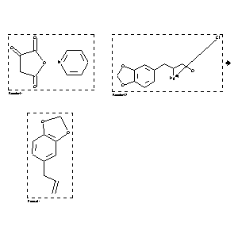

|  |
| FA | RX(1); FLST(1); RX(1) |
Reaction (1 of 1)
| Reaction ID | 7977299 |
| Reactant BRN | 5789338; 3921384 |
| Reactant | zinc; Pyridinsalz des Oxymaleinsaeureanhydrids; 2-benzo[1,3]dioxol-5-yl-1-hydroxymethyl-ethylmercury (1+); chloride |
| Product BRN | 136380 |
| Product | 5-allyl-benzo[1,3]dioxole |
| No. of Reaction Details | 1 |
Reaction Details (1 of 1)
| Reaction Classification | Chemical behaviour |
| Comment | Handbook |
| Citation Pointer | 503869; Journal; Paolini; Luzzi; Balbiano; GCITA9; Gazz.Chim.Ital.; 36 I; 1906; 273; CHBEAM; Chem.Ber.; 36; 1903; 3579;503873; Journal; Paolini; Luzzi; Balbiano; GCITA9; Gazz.Chim.Ital.; 36 I; 1906; 272; CHBEAM; Chem.Ber.; 36; 1903; 3579; |
Reference (1 of 2)
| Citation Number | 503869 |
| Document Type | Journal |
| Authors | Paolini; Luzzi; Balbiano |
| CODEN | GCITA9; CHBEAM |
| Journal Title | Gazz.Chim.Ital.; Chem.Ber. |
| (Series) Volume | 36 I; 36 |
| Publication Year | 1906; 1903 |
| Page | 273; 3579 |
Reference (2 of 2)
| Citation Number | 503873 |
| Document Type | Journal |
| Authors | Paolini; Luzzi; Balbiano |
| CODEN | GCITA9; CHBEAM |
| Journal Title | Gazz.Chim.Ital.; Chem.Ber. |
| (Series) Volume | 36 I; 36 |
| Publication Year | 1906; 1903 |
| Page | 272; 3579 |